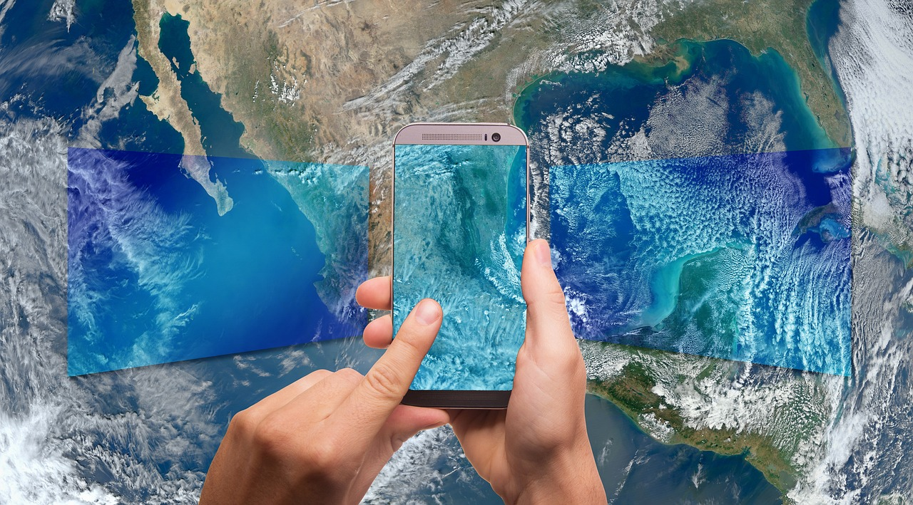

INÍCIO
MEUS DADOS
PONTOS DE COLETA
COLETA DOMICILIAR


Sobre a Recicle Fácil
Somos a Recicle Fácil, uma iniciativa que tem como foco principal contribuir para
o desenvolvimento sustentável das cidades colaborando com a preservação do meio
ambiente e facilitando o processo da reciclagem de materiais, conectando indivíduos aos pontos
de coleta e catadores de materiais recicláveis para direcionar corretamente seus materiais a
fim de que estes possam ser processados, não sendo descartados deliberadamente no meio ambiente.
Missão
"Contribuir de maneira eficaz na maximização da reciclagem de materiais e na
preservação do meio ambiente, conectando pessoas e organizações empenhadas neste
propósito."

Visão
Ser uma empresa referência no quesito preservação ambiental, concientizar a população, as
organizações e o poder público sobre a importância da reciclagem de materiais e reduzir o
impacto ambiental retirando do meio ambiente a quantidade mais próxima possível de sua
totalidade de materias que possam ser reciclados.
Valores
- Colaboração - Aproximando agentes que possam fazer do mundo um ligar mais limpo e agradável
- Criatividade - Coragem para trazer inovação nas estratégias de preservação do meio ambiente.
- Paixão - Amar ambiente em que vivemos a ponto de não medir esforços para preservá-lo.
- Responsabilidade - Enterder que o futuro do planeta depende de todos nós.
- Qualidade - Entregar serviços com alto padrão de eficiência.
Leonardo Santos
- Belo Horizoonte - MG
- Tecnólogo de Logística
- Técnico em Eletrônica e de Telecomunicações
- Graduando: Análise e Desenvolvimento de Sistemas

Marcio Carvalho
- Salvador - BA
- Bibliotecário
- Tecnólogo em Segurança do Trabalho
- Graduando: Análise e Desenvolvimento de Sistemas
- Pós-Graduando: Biblioteconomia

Victor Lopes
- São Paulo - SP
- Desenvolvedor Web
- Graduando: Análise e Desenvolvimento de Sistemas

Cristiane Maximiano
- São Bernardo do Campo - SP
- Bacharel em Administração e Comércio Exterior
- Pós Graduação: Gerenciamento de Projetos - PMI
- Técnico de Logística
- Cursando: Informática Para Negócios - Fatec
Lidiano Felício
- Cascavel - CE
- Estudandte de Tecnologia